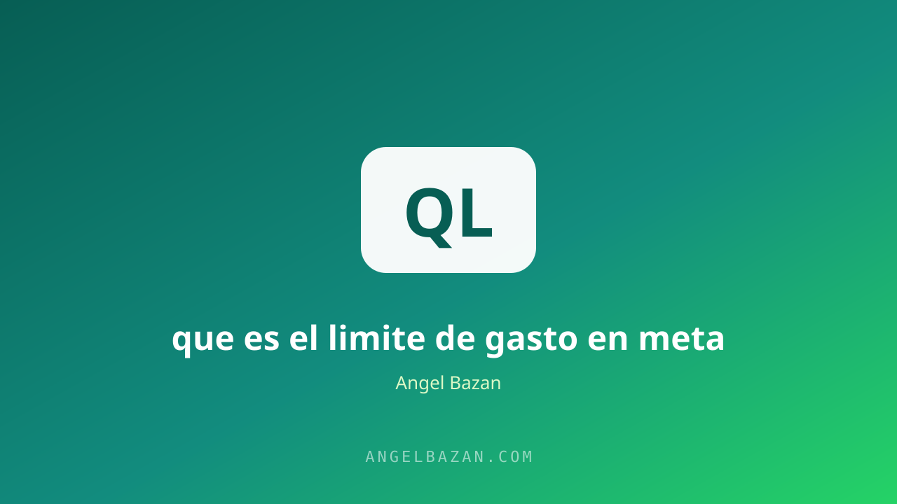

Límite de gasto en Meta Ads: qué es y cómo aumentarlo
Tu cuenta solo puede gastar una cifra máxima al día y eso te frena al escalar. Aprende cómo funciona el límite, por qué existe y cómo aumentarlo sin dañar tu cuenta.
En este artículo
Tu cuenta de Meta Ads puede gastar más dinero del que tienes. Suena raro, pero es exactamente por eso que existe el límite de gasto: Meta te presta el presupuesto para que la subasta funcione y luego te cobra, y solo te presta lo que considera seguro según tu historial. Cuando quieres escalar de S/ 200 a S/ 2.000 al día, ese techo se convierte en tu mayor enemigo.
La buena noticia es que el límite no es permanente: crece con el uso, con el cumplimiento y con las señales de confianza que tu cuenta va acumulando. Y hay un método para acelerar ese crecimiento. Esta guía te explica cómo funciona el límite, por qué cambia y cómo subirlo sin arriesgar tu cuenta.

Qué es el límite de gasto
Es el monto máximo que Meta te permite gastar por día en total. Una cuenta nueva puede arrancar con límites muy bajos (el equivalente a unos 50 dólares diarios), mientras que una cuenta con historial de meses puede tenerlo en miles. No lo eliges tú: lo calcula un sistema de confianza que mira tu historial de pagos, la antigüedad de la cuenta y tus resultados. El límite no es un castigo: es un mecanismo de protección para que Meta no acumule deuda impagable.
Un detalle que confunde a muchos: el límite no aparece como un número exacto en el panel, sino como la cifra máxima que la plataforma acepta al configurar un presupuesto diario. Si intentas poner S/ 5.000 y el sistema solo acepta hasta S/ 500, ya conoces tu techo actual. Ese número se revisa en cada ciclo de facturación, y mientras más historial de pagos limpio acumules, más alto será el nuevo tope automático.
Por qué Meta lo aplica
Imagina que todos pudieran configurar S/ 10.000 diarios el primer día. Meta factura después de la entrega, así que el riesgo de impago sería enorme. El límite es su seguro. Por eso crece cuando demuestras que pagas puntual, que llevas días gastando sin problemas y que no incumples políticas. En resumen: el límite sube a medida que tu cuenta deja de ser una incógnita. Cada día de buen comportamiento es un día de puntos para tu historial.
Cuenta vs campaña: dos límites distintos
Existen dos techos que debes distinguir. El límite de cuenta es el máximo total diario de todos tus anuncios juntos; el límite de campaña es el presupuesto máximo que acepta una campaña individual. Al escalar, la gente suele chocar primero con el de campaña. La solución no es abandonar la campaña ganadora: es escalar con estructura, por ejemplo duplicando campañas o moviendo presupuesto, como se explica en cómo escalar una cuenta de Meta Ads.
Cómo aumentarlo paso a paso
- Paga siempre con la misma tarjeta y a tiempo: la consistencia de pagos es la señal número uno para el sistema.
- Gasta cerca de tu límite: si solo usas el 10% de tu techo, Meta no tiene razón para subírtelo.
- Mantén la cuenta activa: los días sin publicar no suman confianza. Un gasto mínimo constante sí.
- Respeta las políticas: un solo rechazo no mata la cuenta, pero acumular infracciones congela tu historial.
- Completa la verificación de la empresa: las cuentas verificadas reciben límites mayores y menos fricción.
Siguiendo este orden, la mayoría de las cuentas ven aumentos cada 1-2 semanas de gasto constante. El ritmo depende del mercado: los detalles del caso latinoamericano están en cuánto invertir en Meta Ads.
Y no subestimes el poder del soporte: si llevas semanas con el mismo techo y pagas puntual, abre una conversación con el soporte de facturación de Meta y explica tu caso. En muchos casos, una cuenta en orden con historial positivo recibe un incremento o la indicación exacta de qué señal falta para lograrlo. No es la vía principal, pero sí un acelerador real cuando el proceso automático se queda corto.
Escala sin chocar con el límite
No esperes a que el límite crezca para planear el crecimiento. Mientras tu techo aumenta, usa esa ventana para testear: sube el presupuesto un 20% cada 2-3 días, observa si el CPL se mantiene y repite. Así, cuando el límite suba, tu máquina ya está optimizada para absorber el gasto. El presupuesto de pruebas se calcula en la calculadora de presupuesto de testeo y la estructura de campañas lista en el estructurador de campañas.
Otra palanca para crecer sin golpear el techo es la estructura empresarial: varias cuentas verificadas de la misma empresa, cada una con su historial y su límite, te dan más capacidad total que una sola cuenta saturada. No se trata de evadir reglas, sino de organizar el negocio como corresponde. El reparto de presupuesto entre esas cuentas y la rentabilidad de cada una se controlan con la calculadora de CPL y ROAS.
Errores que retrasan tu aumento
- Crear cuentas nuevas para "saltarse" el límite: te reinicia el historial y es motivo de bloqueo.
- Cambiar de método de pago a cada rato: el sistema sospecha de la inestabilidad.
- Subir el presupuesto 300% de golpe: el gasto diario se dispara y el límite te frena a mitad de subasta.
- Ignorar los rechazos de anuncios: cada incumplimiento alarga tu camino al techo alto.
Preguntas frecuentes
¿Cuánto tiempo tarda en subir el límite de gasto? Con gasto constante y pagos puntuales, normalmente ves aumentos entre 7 y 21 días. La clave es la constancia, no los trucos.
¿Puedo pedir un aumento manual a Meta? No hay un botón directo, pero completar la verificación de empresa y usar métodos de pago verificados acelera el incremento automático.
¿El límite de gasto se renueva cada mes? Sí, el ciclo de facturación se reinicia, pero el techo diario se mantiene o crece según tu comportamiento. Pagar el saldo completo siempre ayuda.

Angel Bazán
Especialista en funnels, Meta Ads y WhatsApp + IA. Ayudo a negocios a vender más combinando tráfico pagado con conversaciones automatizadas.
Conoce más sobre mí →Aprende a crear y vender productos digitales con Meta Ads, WhatsApp e IA
Clases en vivo, estrategias y recursos para construir tu sistema desde cero. 🚀
Únete gratis al grupo